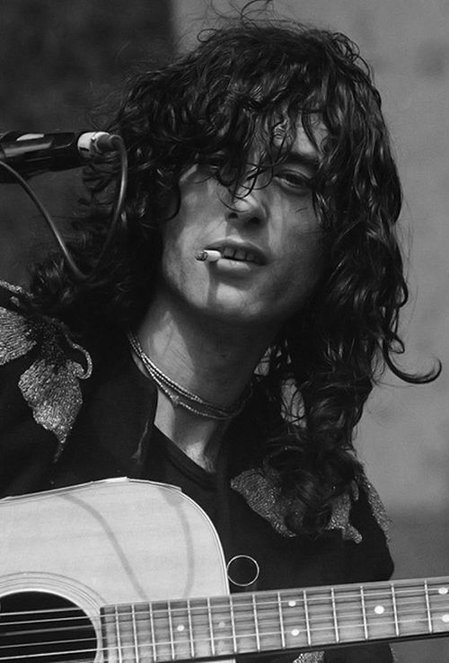
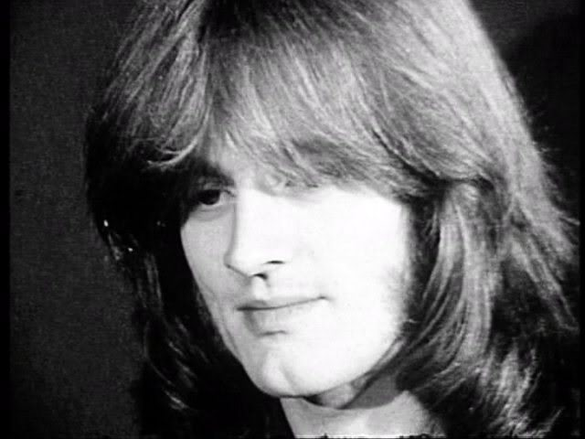
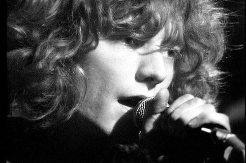
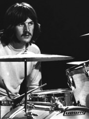

Led Zeppelin is one of the best-selling music groups in the history of audio recording. Various sources estimate the group's worldwide sales at more than 200 or even 300 million albums. With 111.5 million RIAA-certified units, they are the second-best-selling band in the United States. Each of their nine studio albums reached the top 10 of the US Billboard album chart, and six reached the number-one spot.
Led Zeppelin lyrics drew on the band's blues and folk roots, often mixing lyrical elements of mythology and mysticism. Many of the band's songs dealt with themes of romance, unrequited love and sexual conquest, which were common in rock, pop and blues music.
What each member of the band brought to the musical scene is also quite unique.
Truly one of the guitar gods, Jimmy continues to inspire guitarists both new and seasoned, and will likely influence musicians, bands and songwriters for generations to come. Inducted into the Rock And Roll Hall of Fame twice. Wanting to create a new and heavy blues-based rock sound, Jimmy Page founded Led Zeppelin and the rest, as they say, is history.
Jimmy Page is regarded as the "Pontiff of power rifting" proved influential for all the guitarists that followed which include guitarists like Ace Frehley, Joe Satriani, John Frusciante, James Hetfield, Kirk Hammett, Zakk Wylde, Y ngwie Malmsteen, Tony Iommi, Joe Perry, Richie Sambora, Angus Young, Slash, Dave Mustaine, Jerry Cantrell, Stone Gossard, Mick Mars, Paul Stanley and many many more.
John Paul Jones (right) was an accomplished sessions musician even before joining the band. His ability to play almost everything makes him one of the most versatile musicians and talented sought-after arrangers in London. Made an enormous contribution to the work of the team.
Many musicians like John Deacon of Queen, Geddy Lee of Rush, Steve Harris of Iron Maiden, Flea of Red Hot Chili Peppers, Gene Simmons of Kiss, and Krist Novoselic of Nirvana have been influenced by him.
Robert Plant (left) is widely considered as the best lead singer in rock history. His lyrics were often mystical, philosophical and spiritual, alluding to events in classical and Norse mythology. He also co-wrote many of Zeppelin's greatest songs.
Robert Plant has influenced singers such as Freddie Mercury, Axl Rose and Chris Cornell.
John Bonham (right) is considered as the best rock drummer ever . “Bonzo” was known for his hard drumming style with great speed , power and extensive use of his right foot. He used the longest and perhaps the heaviest drum sticks there was to offer which he referred to as “trees”.
Even more than 30 years after his death he is regarded as the best drummer of all times. The drummers he influenced are Joey Kramer, Lee Kerslake, Tony Thompson, Dave Grohl, Tommy Lee, Peter Criss, Chad Smith, Dave Lombardo and Brad Wilk.